Tool Shelf - Curve - Edit Mode
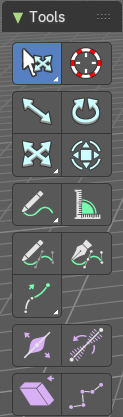
With a curve object in edit mode you will find some tools to edit the curve geometry in the tool shelf.
Tweak, Select, Transform, 3D Cursor Measure and Annotate tools
The tweak, select, transform, 3d cursor, measure and annotate tools at the end of the list are explained in the chapter 7.1.1 Editors - 3D View - Tool Shelf - Object Mode. We won't cover this tools again here.
Curve Stroke Panel
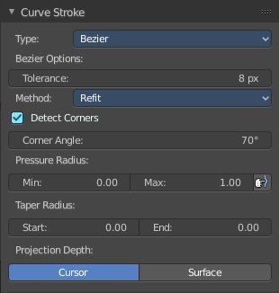
The curve stroke panel is covered in the chapter 25.1.1 Editors - Properties Editor - Tools Tab - Edit Mode. We won't cover this tools again here.
Draw
Allows you to draw a curve into the viewport.
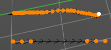
Tool Settings
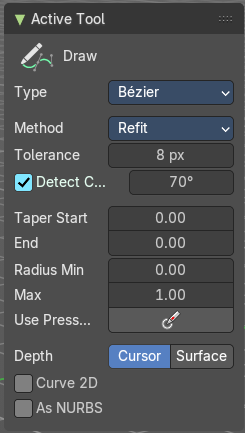
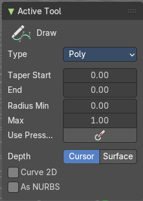
Type
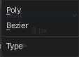
Set the draw method for the curve. Poly draws a simple polygon shape. Bezier creates a Bezier curve type with handlers.
With type Bezier you will get more options.
Method
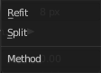
The curve fitting method for a Bezier curve.
| Entry | What it does |
|---|---|
| Refit | Incrementally refit the curve. |
| Split | Split the curve until it fits. |
Tolerance
Allow deviation for a smoother but less precise line.
Detect Corners
Detect corners and use non aligned angles.
Corner Angle
Corners above this angle are considered as corners.
| Entry | What it does |
|---|---|
| Taper Start / End | Taper factor for the radius of each curve point. |
| Radius Min/Max | Minimum or maximum radius when the pressure is applied. |
| Use Pressure | Use tablet pressure to draw the curve. |
Depth
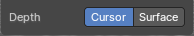
The method of projecting depth. Cursor or surface.
Cursor
Cursor has no further settings.
Surface
Project onto selected
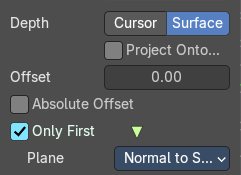
Projects the strokes only onto selected objects.
Absolute Offset
Apply a fixed offset, and don't scale by the radius.
Only First
Use the start of the stroke for the depth.
Plane
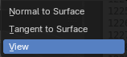
The plane for the projected strokes.
| Entry | What it does |
|---|---|
| Normal to Surface | Draw in a plane perpendicular to the surface. |
| Tangent to Surface | Draw in the surface plane. |
| View | Draw in a plane that is aligned to the viewport. |
| Entry | What it does |
|---|---|
| Curve 2D | Draw the curve as 2d. |
| As Nurbs | Draw the curve as nurbs. |
Last Operator Draw Curve
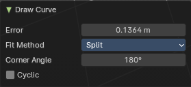
| Entry | What it does |
|---|---|
| Error | Adjust the error distance threshold in object units |
| Fit Method | The curve fitting method. Choose between Refit and Split. |
| Corner Angle | Corners above this angle are considered as corners. |
| Cyclic | With curve type Bezier the curve gets closed. Has no effect at curve type Poly. |
Curve Pen
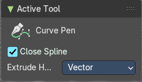
Extrudes start and end point of the spline to where you click with the mouse.
Tool Settings
Close Spline
Make the spline cyclic.
Extrude Handle Type
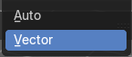
Type of the extrude handler.
Extrude Tools Group
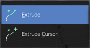
This tools allows you to extrude out a new curve segment from the current selection
| Entry | What it does |
|---|---|
| Snapping | Holding down Ctrl activates temporary global snapping. |
| Precision movement | When you hold down shift, then you will have a much slower but also much preciser movement. |
Header Values
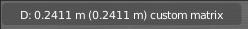
When you move your selection then you will see some values in the header, which defines the current position of the extrude point.
Move without Widget
You don't have to use the widget to move the object. You can also click aside of it, and drag the object around. The mouse turns into a move cursor. The standard behavior then is to move in screen space. When you want to move into a specific axis, then press X or Y or Z to limit the movement to this axis.
Limit Axis


When you want to move along a specific axis, then press X or Y or Z to limit the movement to this axis. You usually start in global orientation. But you can change this in the Orientation settings.
By holding down the mouse button and pressing the X, Y or Z key twice you can toggle this to local. But also to other orientations. This depends in what orientation you start. With normal you can toggle that way between Normal and Global.
Extrude
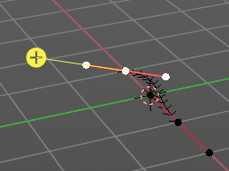
The Extrude tool extrudes the current selection in the direction of the widget.
When you activate the tool, then you will by default see a yellow widget at the selection. Drag it to extrude the selection.
Header Value
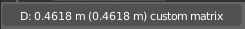
When you extrude curve points then you will see a value in the header. It tells you the current target position relative to the initial starting point(s) . This factor always starts with 0.
Tool Settings
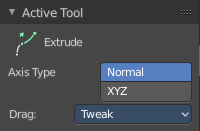
Axis Type
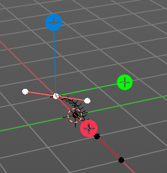
You can choose between the regular axis type. That's the yellow widget with just one handler. It always points in the direction of the middled normals of the selection.
Or you can use the XYZ axis type. That's a handler with three axis. This widget can be aligned with the transform orientation methods.
Drag
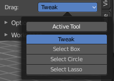
When you click at the widget of the active tool, then you perform the tool action. Adjust what should happen when you click outside of the widget, in the empty area.
| Entry | What it does |
|---|---|
| Active Tool | When you click off the widget then the click still does the same than clicking at the widget. It performs the active tool. |
| Tweak, Select Box, Circle and Lasso | When you choose this options then you will set the off click to the different select methods. Whereas tweak works more than a move tool then. Tweak is the default. |
Last operator Extrude Curve and Move
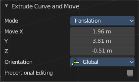
Mode
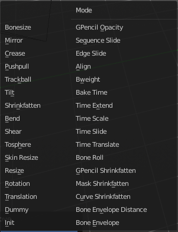
A drop-down box. Choose between different extrude modes.
Default is Translation. Most other methods has no effect.
Move X , Y , Z
The position of the extruded point(s).
Orientation

Adjust the orientation of the extrusion. It usually starts with Normal.
Proportional editing
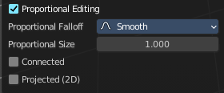
Enables proportional editing. Activating proportional editing reveals further settings.
| Entry | What it does |
|---|---|
| Proportional Falloff | Adjust the falloff methods. |
| Proportional Size | See and adjust the falloff radius. |
| Connected | The proportional falloff gets calculated for connected parts only. |
| Projected(2D) | The proportional falloff gets calculated in the screen space. Depth doesn't play a role. When it's in the radius, then it gets calculated. |
Extrude Cursor
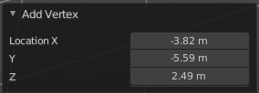
Extrudes the control points to where you click.
Last Operator Add Vertex
Location X Y Z
The location of the new created control point(s).
Radius
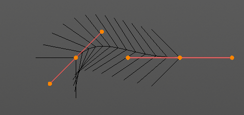
Bezier curves have a radius. This is displayed by the black lines that points away from the curve. The radius tool allows you to resize this radius.
Header Value
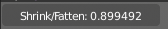
When you resize the curve radius then you will see a value in the header. It tells you the current scale factor. This factor always starts with 1.
Tool Settings
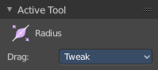
Drag
When you click at the widget of the active tool, then you perform the tool action. Adjust what should happen when you click outside of the widget, in the empty area.
| Entry | What it does |
|---|---|
| Active Tool | When you click off the widget then the click still does the same than clicking at the widget. It performs the active tool. |
| Tweak, Select Box, Circle and Lasso | When you choose this options then you will set the off click to the different select methods. Whereas tweak works more than a move tool then. Tweak is the default. |
Last Operator Transform
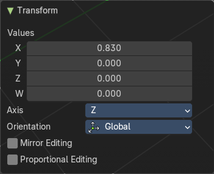
| Entry | What it does |
|---|---|
| Values X Y Z W | The axis to increase the radius. Just X has an effect with the curve radius. |
| Axis | The axis to use. This has no effect with a curve object. |
Orientation
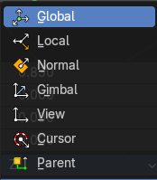
Adjust the orientation of the extrusion. It usually starts with Normal.
| Entry | What it does |
|---|---|
| Mirror Editing | Enable mirror editing. |
| Proportional editing | Enables proportional editing. Activating proportional editing reveals further settings. · Proportional Falloff: Adjust the falloff methods. · Proportional Size: See and adjust the falloff radius. · Connected: The proportional falloff gets calculated for connected parts only. · Projected(2D): The proportional falloff gets calculated in the screen space. Depth doesn't play a role. When it's in the radius, then it gets calculated. |
Tilt
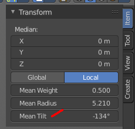
With this tool you can tilt the curve. It is the mean tilt value in the Transform panel of the Sidebar.
Header Value
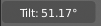
When you rotate the curve with the tilt tool, then you will see a value in the header. It tells you the current rotation relative to the starting rotation. This value always starts with 0.
Tool Settings
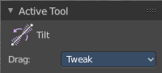
Drag
When you click at the widget of the active tool, then you perform the tool action. Adjust what should happen when you click outside of the widget, in the empty area.
| Entry | What it does |
|---|---|
| Active Tool | When you click off the widget then the click still does the same than clicking at the widget. It performs the active tool. |
| Tweak, Select Box, Circle and Lasso | When you choose this options then you will set the off click to the different select methods. Whereas tweak works more than a move tool then. Tweak is the default. |
Last Operator Transform
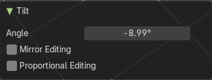
| Entry | What it does |
|---|---|
| Angle | This value tells you the current rotation relative to the starting rotation. This value always starts with 0. |
| Mirror Editing | Enable mirror editing. |
| Proportional editing | Enables proportional editing. Activating proportional editing reveals further settings. · Proportional Falloff: Adjust the falloff methods. · Proportional Size: See and adjust the falloff radius. · Connected: The proportional falloff gets calculated for connected parts only. · Projected(2D): The proportional falloff gets calculated in the screen space. Depth doesn't play a role. When it's in the radius, then it gets calculated. |
Shear
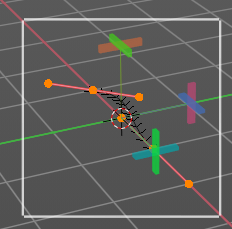
The shear tool allows you to shear the selected geometry. When you activate the tool, then a widget appears that allows you to pull in the desired direction.
Tool Settings
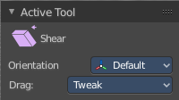
Orientation
Choose the orientation for the shear action.
Drag
When you click at the widget of the active tool, then you perform the tool action. Adjust what should happen when you click outside of the widget, in the empty area.
| Entry | What it does |
|---|---|
| Active Tool | When you click off the widget then the click still does the same than clicking at the widget. It performs the active tool. |
| Tweak, Select Box, Circle and Lasso | When you choose this options then you will set the off click to the different select methods. Whereas tweak works more than a move tool then. Tweak is the default. |
Last Operator Shear
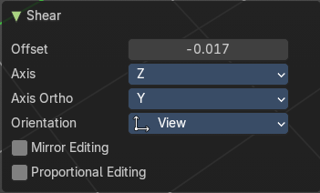
| Entry | What it does |
|---|---|
| Offset | Adjust an offset. |
| Axis | Defines one axis of the imaginary shear axis plane. |
Axis Ortho
Defines the other axis of the imaginary shear axis plane.
Orientation
Choose the orientation for the shear action.
| Entry | What it does |
|---|---|
| Mirror Editing | Enable mirror editing. |
| Proportional editing | Enables proportional editing. Activating proportional editing reveals further settings. · Proportional Falloff: Adjust the falloff methods. · Proportional Size: See and adjust the falloff radius. · Connected: The proportional falloff gets calculated for connected parts only. · Projected(2D): The proportional falloff gets calculated in the screen space. Depth doesn't play a role. When it's in the radius, then it gets calculated. |
Randomize
Randomize the position of the selected polygon or control points.
Header Value
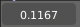
When you randomize the points, then you will see a value in the header. It tells you the current randomization amount. This value always starts with 0.
Tool Settings
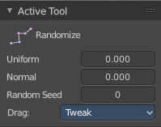
| Entry | What it does |
|---|---|
| Uniform | With a value of 0 the randomization happens uniformly. The higher the value the more uniform the randomization affects the selected points. |
| Normal | Align the offset direction to normals. This value has no effect. |
| Random Seed | A random seed value. |
Drag
When you click at the widget of the active tool, then you perform the tool action. Adjust what should happen when you click outside of the widget, in the empty area.
| Entry | What it does |
|---|---|
| Active Tool | When you click off the widget then the click still does the same than clicking at the widget. It performs the active tool. |
| Tweak, Select Box, Circle and Lasso | When you choose this options then you will set the off click to the different select methods. Whereas tweak works more than a move tool then. Tweak is the default. |
Last Operator Transform
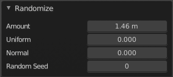
| Entry | What it does |
|---|---|
| Amount | The randomization amount. |
| Uniform | With a value of 0 the randomization happens uniformly. The higher the value the more uniform the randomization affects the selected points. |
| Normal | Align the offset direction to normals. This value has no effect. |
| Random Seed | A random seed value. |